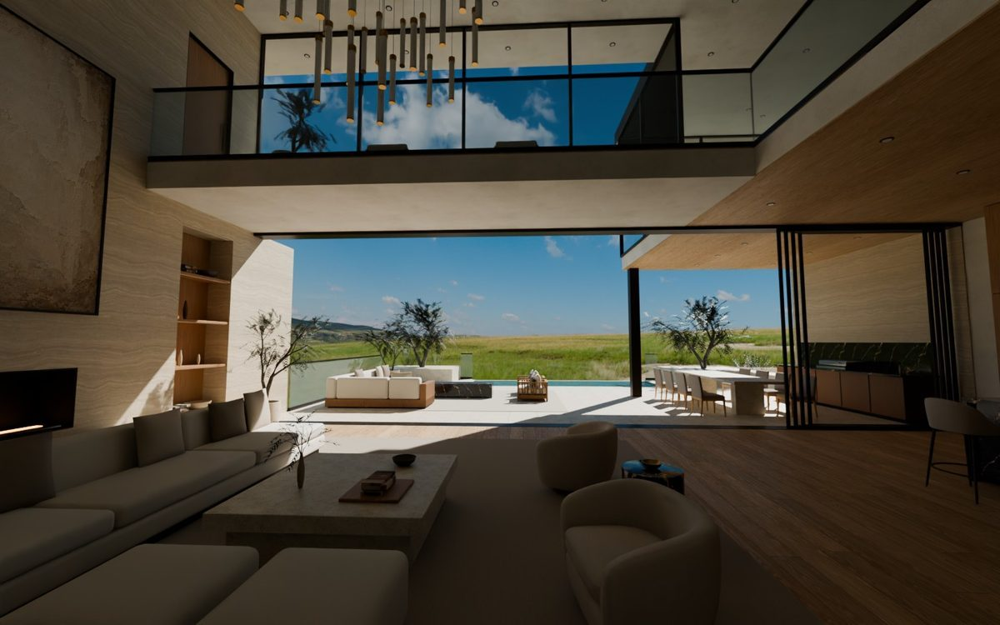
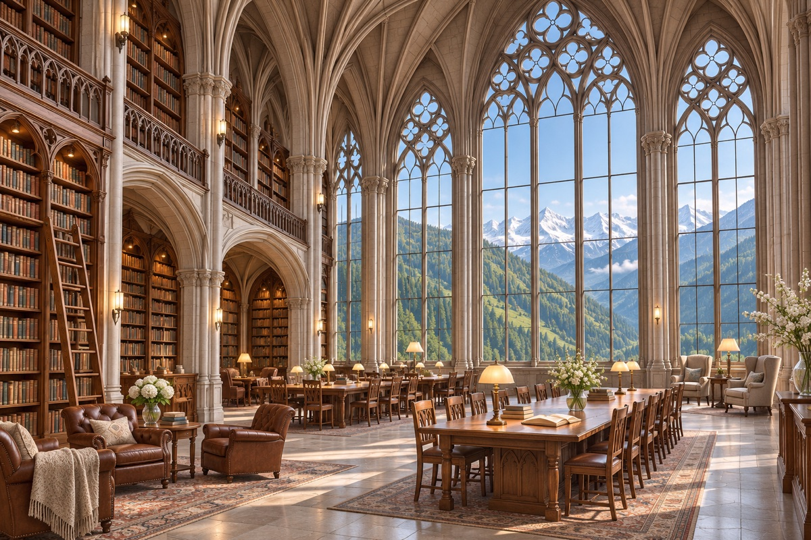
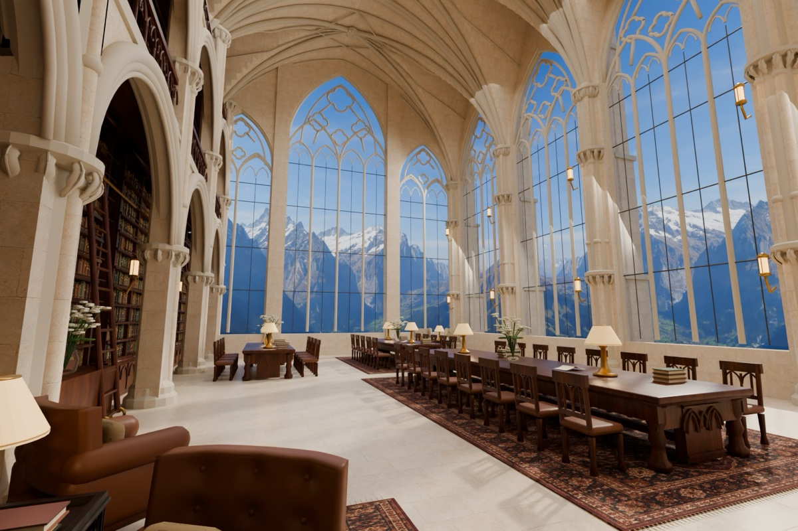
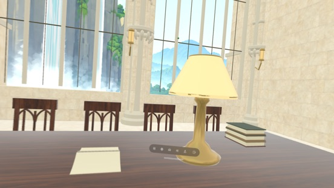
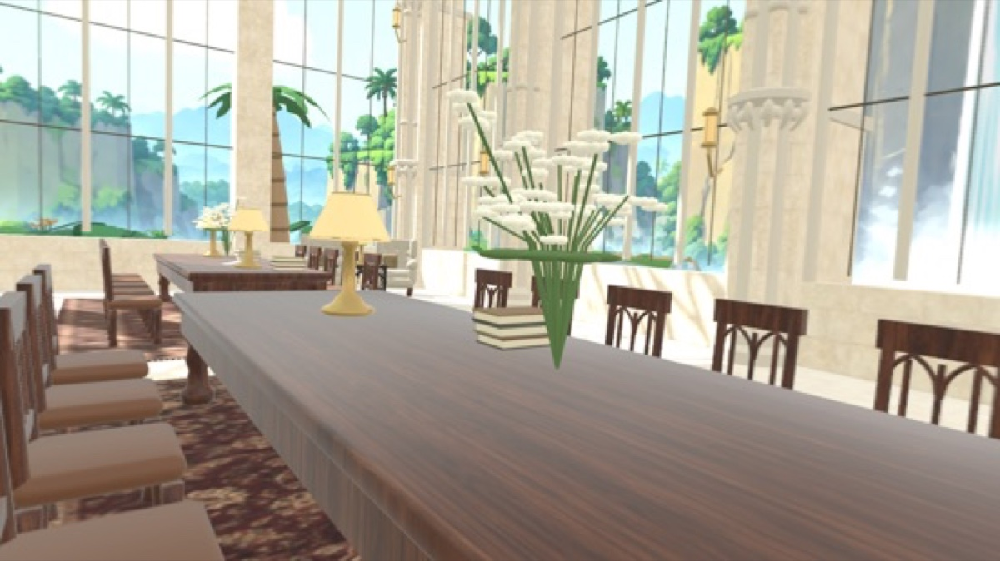

Make your own Room.
Clone the project, start a session, create the image you want, then turn it into a Room.
Clone the project and start a session
git clone https://github.com/EnterLocus/locus-support.git
cd locus-supportOpen this folder in Codex and start a session.
The highlighted boxes below are prompts. Copy them into your agent session and send them to the agent.
This example uses Codex for its built-in, high-quality image generation. Other agents work too, as long as they can generate images and run the Room-building skill.
From concept to Alpine Scriptorium
Here is the Alpine Scriptorium demo: generate a concept image, then ask your agent to build a matching Room.
For this demo, we used GPT 6.1 Sol at high reasoning effort. The result took several iterations, mainly by asking the model to get closer to the original image.

1. Generate a concept image
Generate an interior concept image for a 3D room: a grand library high in the mountains inside a soaring Gothic stone building, with scenic mountain slopes and distant snow-capped peaks outside tall arched glass windows.

If the image is not what you wanted, ask your agent to generate a new one or describe what to change. Continue in the same session until you have an image you want to build.
2. Plan the floor and seats (optional)
This step is optional, but especially useful for a house with a complex layout. Ask the agent to show you a floor plan and seat layout. Review it, request changes, and start building when you are happy with the plan.
Make a floor plan and seat layout for this concept image. Show me the plan, including the main dimensions, openings, furniture, and seats, so I can review it before you start building.
3. Build and check the Room
Build a custom Locus Room from this concept image using the build-original-locus-room skill. Plan the floor layout and seats first, then go straight into headless Blender modeling, run check_room.py with seat renders, and output the .locusplace file without stopping for confirmation.

4. Save the Room
Ask the agent to save the finished Room in a folder you can open on Apple Vision Pro. We recommend iCloud Drive/Locus.
Save the finished .locusplace file in iCloud Drive/Locus so I can import it on Apple Vision Pro.
5. Import the Room


Open iCloud Drive → Locus and select the .locusplace file.
Wait for the import to finish, then return to Places. With Favorites First selected, your new Room appears after your favorites.
6. Refine and import again
Try the Room on Apple Vision Pro. Tell your agent what you would like to change, ask it to update the Room in the same folder, then import the new file again.
Make the Room closer to the original concept image, especially the architecture, proportions, and details.


Build a companion View from an idea, with the static skybox tutorial.